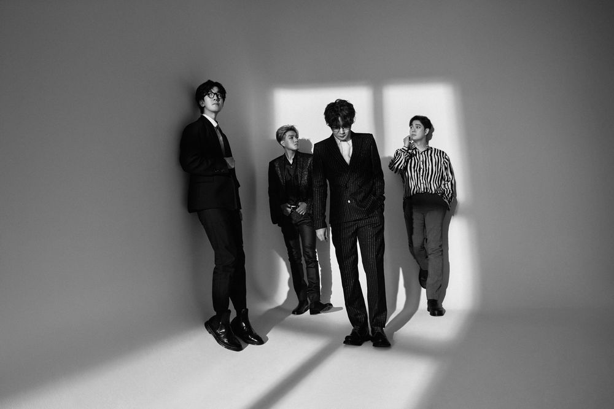

대한민국의 모던 록밴드.
 멤버는 김종완(보컬, 기타, 키보드), 이재경(기타, 키보드), 이정훈(베이스, 탬버린, 키보드, 코러스), 정재원(드럼, 코러스). 정식 멤버는 아니지만 2014년 들어 페스티벌이나 각종 공연에서 키보드 및 기타 세션으로 피아의 심지와 바드의 루빈이 종종 함께 다니고 있다.넬이라는 이름은 조디 포스터 주연의 영화 넬에서 따왔다고 한다. 극 중 주인공 넬은 인간사회와 단절된 생활을 하느라 아무도 이해하지 못하는 언어를 구사하는데, 그런 것처럼 자신들도 자신만의 음악으로 세상과 소통하겠다는 의미를 담았다고 한다. 넬이라는 이름으로 활동하기 전에도 1999년 1월 즈음부터 4명이서 계속 활동을 같이 했었는데, 당시 밴드 이름은 아일럿. 김종완이 그전에 선배들과 밴드를 결성했었는데 그 선배들이 지은 이름이라고 한다. 멤버들 사이에선 몹쓸 이름이었다고 전해진다.